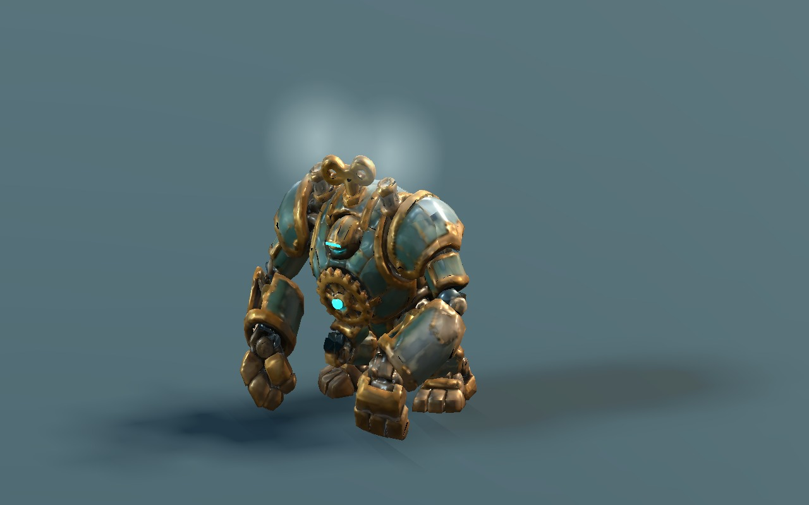
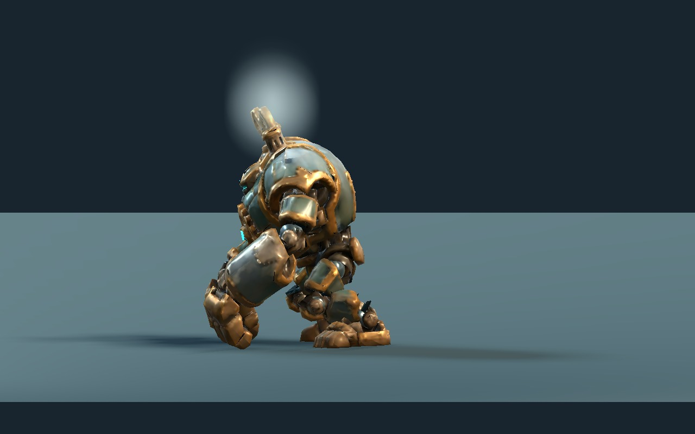

Tripo 원본을 구동 단위로 나누고 경량화·강체 리깅·모션을 준비했다. 현재는 게임 연결 전 아트 검토본이다. 기존 수렵견 기본형은 그대로 보존하고, 신호기·거대 인형과 두 추가 장갑 세트를 완성했다.
검증과 넘겨줄 파일
현재 파일 기준 게임 엔진 134,752개 확인, GPU 1,455장 촬영. 저장 원본 1,242개 자세, 본 위치 39,890개 비교. 기존 수렵견 파일 26개 해시 일치.
신호기 망치는 신호 시작에서 종까지 약 0.622mm, 반 주기에는 50.4mm 떨어진다. 거대 인형은 0.55초에 양쪽 주먹 최저점이 바닥 위 12mm에 이른다. 루프 끝점·단일 본 웨이트·고정 길이·120Hz 바닥 검사와 저장 원본↔Godot 위치 비교를 통과했다.

거대 인형 · 0.55초 타격 접점
같은 시각 · 측면 접지Tripo 생성·분할 원본과 사용량
두 모델 모두 기존 원화 → Tripo H3.1 HD / private / 2K PBR → Fine 분할. 모델당 생성 30 + 분할 40, 이번 작업 합계 140 크레딧. 원본 GLB는 수정하지 않았다. UI 수치와 다운로드 수치 차이는 각 원본 README에 기록했다.
신호기 원본 · 거대 인형 원본
남겨 둔 경고와 검증 범위
AI 원본 외피의 열린 경계, UV/노멀 이음 정점, 내부 축, 숨겨진 맞댐 면은 보존했다. 새 QA의 오류는 0이며 경고의 실제 목록은 각 production.json에 남아 있다. 새 장갑은 기본 몸체와 함께 QA를 수행한다. 단독 장갑은 몸체에 붙여 쓰는 부품이다.
파괴는 지정된 시작 자세에서 구운 동작이다. 임의 취소·블렌드 자세, 파편끼리·경사·벽의 실시간 충돌과 최종 성능을 검증한 것은 아니다. 추가 장갑은 호환 본을 복제한 별도 리그다. 게임의 스킬 규칙·표적·피해·범위 FX·노드 전환 연결과 최종 외형 선택은 다음 단계다.
전체 인계 README · 모델·노드 경로 · 검증·입력 해시 · 기존 수렵견 기본형 검토